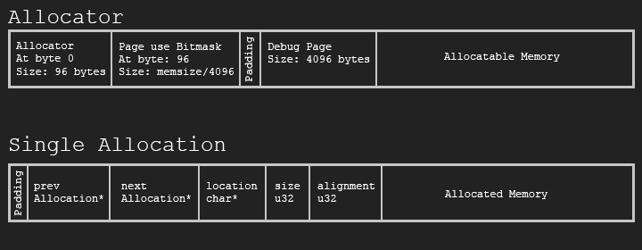

Custom Memory Allocator
In this blog we will explore building a generic custom memory allocator for games and embedded devices. An allocator like this is useful if you have one big chunk of memory and no runtime to rely on. This custom allocator might be faster than the system provided malloc, but a generic allocator will never be truly fast. Games use many types of allocators, the allocator presented here can easily be extended to support a free list or any other allocation strategy. This allocator will help us catch errors, visualize our heap, and easily compile for embedded platforms and WASM. A slightly more robust version of the allocator is available on my github: github.com/gszauer/GameAllocator
There are a few resources on memory allocation that i would suggest reading before this blog, they are:
- Ready, Set, Allocate! on alt dev blog by Paul Laska: Part 1, Part 2, Part 3, Part 4, Part 5, Part 6
- Building your own memory manager by Arpan Sen & Rahul Kardam
- Custom Memory Allocators by Mariano Trebino
The code for this blog is on github. There is a Web Assembly Demo, and the github repo contains a debug visualizer. It's a quick page viewer UI that can be used to debug memory allocations:

Implementing the memory manager
The allocator has a header that tracks active and free allocations. It will allocate memory in 4096 byte chunks. The memory is laid out with an allocator structure at the front, followed by a large bitmask. Each bit in this large bitmask represents if a page of memory is in use or not. The next page is a debug page, you can use this for scratch memory. Following the debug page is the allocatable reguin of memory. Each allocation starts with optional padding, followed by an allocation tracker, followed by the acual memory being allocated:
The 4 KiB page size was chosen because the android allocator uses 4k pages. Having 4k pages makes the amount of overhead needed to manage them small. For example, managing 32 MiB of memory there is 2/8192 pages of overhead, for 512 MiB there is 6/131072 pages of overhead, and for 4 GiB there is 34/1048575 pages of overhead. The bitmask will be an array of 32 bit unsigned integers. If each bit represents one page (4096 bytes), a 32 bit number can represent 32 pages or 128 MiB of memory. So, to track 32 MiB we need the bitmask array to have a size of 256. To recap:
- 1 Page is 4096 bytes
- Each page is tracked by 1 bit in a large
uint32array - Number of pages needed to track memory = (size of tracked memory in bytes) / (page size)
- Size of page array = (number of pages) / 32, needs to be padded
Let's define page size as a global variable. We will also define the size of tracking units (in bits) to be 32. We do this because the mask that tracks if a page is allocated or not is going to be a u32 array. Finally, we also have a global allocator pointer. If an allocation doesn't specify an allocator, the global allocator will be used.
extern Allocator* GlobalAllocator; // In mem.cpp const u32 DefaultPageSize = 4096; const u32 TrackingUnitSize = 32;
We will run accross a few numbers that need to be padded. For the tracking array, imagine if we need 42 bits, that is going to need two integers, since the first one holds 32 bits and the second one will hold only 10 bits with 22 bits of padding. To pad a number, we need to add one less than the padding amount to the number. Somewhere in those padding bits will be a bit that's aligned. Then, we check if the number % padding is zero, if it's not we return the difference.
// Won't be used later, just sample code
u32 LeftPadNumber(u32 number, u32 padding) { // Like an align
u32 result = 0;
if (padding != 0) {
if (number % padding != 0) {
u32 delta = padding - (number % padding);
result = delta;
}
}
// If this was an alignment, we would skip the first "result" bits
return result;
}
There are two core structures to our memory manger, the Allocator and the Allocation. I will cover the Allocator struct in this section, and the Allocation struct in the next section. This memory manager is intrusive. This means both the Allocator struct and the Allocation struct exist inside of the memory they are managing.
The Allocator needs a variable to keep track of how many bytes are being managed (```size```). The allocator structure is always at the start of the memory being managed, which means the range of managed memory is from (u8*)allocator to (u8*)allocator + allocator->size. It contains callbacks for when memory is allocated or released, a number of free lists to be used by fast sub-allocators, and a list of active allocations. The list of active allocations can be used to check if all allocated memory has been released at shutdown time. The allocator is a first fit allocator, it starts to scan the bitmask for available memory after page of the last successfull allocation. To accomodate tis behavior, the allocator keeps track of a scan bit. There is also utility vairables that keep track of the maximum pages that where used, how much unpadded memory has been requested, and how many pages are currently in use.
struct Allocation; // We will implement this struct soon
struct Allocator {
// Fast free lists for sub-allocators
Allocation* free_64;
Allocation* free_128;
Allocation* free_256;
Allocation* free_512;
Allocation* free_1024;
Allocation* free_2048;
// List of memory that has been allocated, but not released
Allocation* active;
// In bytes, how much total memory is the allocator managing
u32 size;
// How many bytes where requested (unpadded)
u32 requested;
// Default is 4096, but each allocator can have a unique size
u32 pageSize;
// Only used if MEM_FIRST_FIT is off
u32 scanBit;
// How many pages are currently in use
u32 numPagesUsed;
// What's the maximum number of pages that where used
// Use this to monitor how much memory your application actually needs
u32 peekPagesUsed;
};
Now that the allocator sructure is defined, let's work on the code to initialize the allocator. To initialize the allocator, we need a pointer to some memory, and to know how many bytes that memory contains. To keep things simple, we're going to assume that the memory being passed in is already 8 byte aligned and a multiple of page size (default 4096 bytes)
Allocator* Initialize(void* memory, u32 bytes, u32 pageSize) {
// prt should be u32 on 32 bit platform or % will be missing
u64 ptr = (u64)((const void*)memory);
// Memory being managed should be 8 byte aligned. Consider using AlignAndTrim
assert(ptr % AllocatorAlignment == 0);
// The size of the memory being managed must be aligned to PageSize
assert(bytes % pageSize == 0);
// minimum memory size is 10 pages, page size is PageSize
assert(bytes / pageSize >= 10);
Let's set up the allocator structure and the bitmask to track which pages are in use. The allocator is easy, it always goes at the start of the memory being tracked. The mask array is a bit tricky. We will implement two helper functions: AllocatorPageMask and AllocatorPageMaskSize in the next section to retrieve the mask as an array of bytes (u8*). We will use these two functions and convert the resulting array into an array of 32 bit integers.
// Set up the global allocator
Allocator* allocator = (Allocator*)memory;
Set(allocator, 0, sizeof(allocator), "Initialize");
allocator->size = bytes;
allocator->pageSize = pageSize;
// Set up the mask that will track our allocation data
u32* mask = (u32*)AllocatorPageMask(allocator);
u32 maskSize = AllocatorPageMaskSize(allocator); // assuming it's u8 array
maskSize =/ (sizeof(u32) / sizeof(u8)); // convert from u8 to u32 array
Set(mask, 0, sizeof(u32) * maskSize, __LOCATION__);
At this point the alloctor is mostly set up. All that's left is to mark the pages of memory that the allocator and allocation mask occupy as used. First, we find the size of the allocator meta data in bytes. This is the sum of the padded allocator size and the size of the page tracker bitmask. The number of pages being used needs to be padded, and we need to reserve a debug page. The SetRange helper function is responsible for setting the tracking bits, so we don't have to worry about setting them here.
// Find how many pages the meta data for the header + allocation mask will take up.
// Store the offset to first allocatable,
u32 metaDataSizeBytes = AllocatorPaddedSize() + (maskSize * sizeof(u32));
u32 numberOfMasksUsed = metaDataSizeBytes / pageSize;
if (metaDataSizeBytes % pageSize != 0) {
numberOfMasksUsed += 1;
}
// This way, allocatable will start on a page boundary
metaDataSizeBytes = numberOfMasksUsed * pageSize;
// Add a debug page at the end
metaDataSizeBytes += pageSize;
numberOfMasksUsed += 1;
//allocator->offsetToAllocatable = metaDataSizeBytes;
allocator->scanBit = 0;
SetRange(allocator, 0, numberOfMasksUsed);
allocator->requested = 0;
Finally we can return the allocator when the function is done. Before returning the allocator, do a quick sanity check to make sure the memory is aligned correctly and return null if it's not.
if (ptr % AllocatorAlignment != 0 || bytes % pageSize != 0 || bytes / pageSize < 10) {
return 0;
}
return (Allocator*)memory;
}
Helper methods
Let's work on some of the helper methods used in the above code. The first two are AllocatorPageMask and AllocatorPageMaskSize. This pair of functions returns the mask that tracks which page is in use as a u8 pointer. The size of the mask is always a multiple of 32, even if these functions treat the array as a u8. The initializer code has a division to convert the array of bytes into an array of 32 bit integers (u32).
u8* AllocatorPageMask(Allocator* allocator) {
return ((u8*)allocator) + sizeof(Allocator);
}
// This function returns the number of u8's that make up the AllocatorPageMask array
u32 AllocatorPageMaskSize(Allocator* allocator) {
// 1 page = 4096 bytes, how many are needed
const u32 allocatorNumberOfPages = allocator->size / allocator->pageSize;
const u32 allocatorPageArraySize = allocatorNumberOfPages / TrackingUnitSize +
(allocatorNumberOfPages % TrackingUnitSize ? 1 : 0);
return allocatorPageArraySize * (TrackingUnitSize / 8); // In bytes, not bits
}
Next we will implement helper methods to set or clear a range of bits in the array. These functions take an allocator, a start bit and how many bits to modify. We will be using these to mark pages as used or not used when allocating or freeing memory. We will use the previously covered AllocatorPageMask function, and loop trough each bit one by one.
void SetRange(Allocator* allocator, u32 startBit, u32 bitCount) {
u32* mask = (u32*)AllocatorPageMask(allocator);
u32 numElementsInMask = AllocatorPageMaskSize(allocator) / (TrackingUnitSize / 8);
for (u32 i = startBit; i < startBit + bitCount; ++i) {
u32 m = i / TrackingUnitSize;
u32 b = i % TrackingUnitSize;
mask[m] |= (1 << b);
}
allocator->numPagesUsed += bitCount;
if (allocator->numPagesUsed > allocator->peekPagesUsed) {
allocator->peekPagesUsed = allocator->numPagesUsed;
}
}
void ClearRange(Allocator* allocator, u32 startBit, u32 bitCount) {
u32* mask = (u32*)AllocatorPageMask(allocator);
u32 numElementsInMask = AllocatorPageMaskSize(allocator) / (TrackingUnitSize / 8);
for (u32 i = startBit; i < startBit + bitCount; ++i) {
u32 m = i / TrackingUnitSize;
u32 b = i % TrackingUnitSize;
mask[m] &= ~(1 << b);
}
allocator->numPagesUsed -= bitCount;
}
There is one more tracking related helper function i want to implement, FindRange. The FindRange function is used to find multiple consequtive free pages inside the tracking array. It loops trough every bit in the tracking mask, and keeps a counter of how many free bits have been encountered. The first time enough pages (bits) are found to satisfy an allocation, the index of the first page (bit) is returned.
To speed up finding available memory a little bit, the allocaotr keeps track of where the last allocated page was. When scanning from new memory, the allocator will always start from teh tracker of where the last successfull allocation was.
// Returns 0 on error. Since the first page is always tracking overhead it's invalid for a range
u32 FindRange(Allocator* allocator, u32 numPages, u32 searchStartBit) {
u32 * mask = (u32*)AllocatorPageMask(allocator);
u32 numBitsInMask = AllocatorPageMaskSize(allocator) * 8;
u32 numElementsInMask = AllocatorPageMaskSize(allocator) / (TrackingUnitSize / 8);
u32 startBit = 0;
u32 numBits = 0;
for (u32 i = searchStartBit; i < numBitsInMask; ++i) {
u32 m = i / TrackingUnitSize;
u32 b = i % TrackingUnitSize;
bool set = mask[m] & (1 << b);
if (!set) {
if (startBit == 0) {
startBit = i;
numBits = 1;
}
else {
numBits++;
}
}
else {
startBit = 0;
numBits = 0;
}
if (numBits == numPages) {
break;
}
}
Since we looped from search bit to the last bit in the bit mask, we might have missed a large chunk of memory. If no memory was found, start searching from zero to the search bit. Once we're done with this loop, we can return null if not enough memory was found. If enough memory was found, we will advance the scan bit, and return the first bit of memory.
if (numBits != numPages || startBit == 0) {
startBit = 0;
numBits = 0;
for (u32 i = 0; i < searchStartBit; ++i) {
u32 m = i / TrackingUnitSize;
u32 b = i % TrackingUnitSize;
bool set = mask[m] & (1 << b);
if (!set) {
if (startBit == 0) {
startBit = i;
numBits = 1;
}
else {
numBits++;
}
}
else {
startBit = 0;
numBits = 0;
}
if (numBits == numPages) {
break;
}
}
}
if (numBits != numPages || startBit == 0 || allocator->size % allocator->pageSize != 0) {
return 0;
}
allocator->scanBit = startBit + numPages;
return startBit;
}
Shutdown
Lastly, let's implement the shutdown method. This method will clear the bits used to track the allocator overhead, then do a bunch of asserts to make sure all of the allocated memory was actually released. If there is a memory leak, one of the assert calls should trigger.
void Shutdown(Allocator* allocator) {
u32* mask = (u32*)AllocatorPageMask(allocator);
u32 maskSize = AllocatorPageMaskSize(allocator) / (sizeof(u32) / sizeof(u8)); // convert from u8 to u32
// Unset tracking bits
u32 metaDataSizeBytes = AllocatorPaddedSize() + (maskSize * sizeof(u32));
u32 numberOfMasksUsed = metaDataSizeBytes / allocator->pageSize;
if (metaDataSizeBytes % allocator->pageSize != 0) {
numberOfMasksUsed += 1;
}
metaDataSizeBytes = numberOfMasksUsed * allocator->pageSize;
// There is a debug between the memory bitmask and allocatable memory
metaDataSizeBytes += allocator->pageSize;
numberOfMasksUsed += 1;
ClearRange(allocator, 0, numberOfMasksUsed);
assert(allocator->requested == 0); // Not all memory has been released
assert(allocator->active == 0); // There are active allocations, leaking memory
assert(allocator->free_64 == 0); // Free list is not empty, leaking memory
assert(allocator->free_128 == 0); // Free list is not empty, leaking memory
assert(allocator->free_256 == 0); // Free list is not empty, leaking memory
assert(allocator->free_512 == 0); // Free list is not empty, leaking memory
assert(allocator->free_1024 == 0); // Free list is not empty, leaking memory
assert(allocator->free_2048 == 0); // Free list is not empty, leaking memory
}